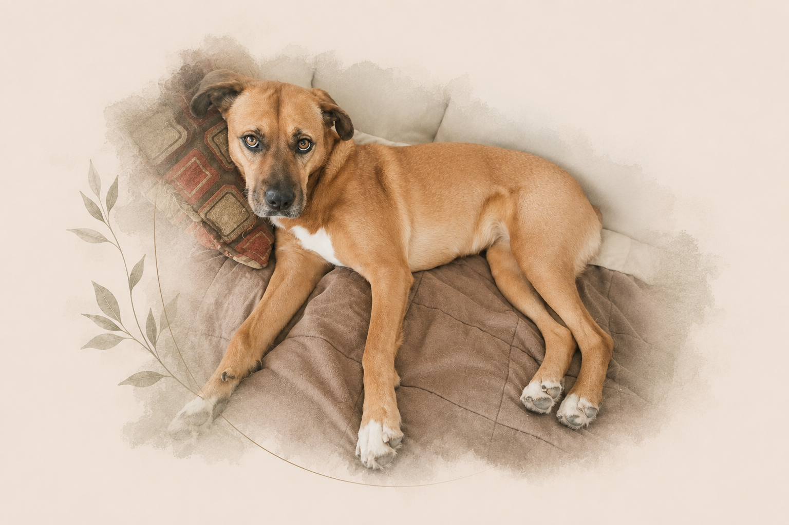

The Vigil
Caregiver burden, exhaustion, hypervigilance, disrupted routines, and the loneliness of holding responsibility that others may not recognize.
SolemnPaw is a place for people whose relationship with an animal carries a depth of love, duty, and responsibility that ordinary language does not always hold well.
When caregiving becomes demanding, when disability changes the body, when death enters the room, or when grief makes the world feel suddenly too quiet, you should not have to minimize the relationship in order to be understood.
You may be reorganizing your days around medications, mobility, feeding, appointments, symptoms, sleep, vigilance, or simply keeping watch. You may be wondering whether you are doing enough, doing too much, or how to keep going when the world around you does not fully understand what is being asked of you.
Caregiver burden, exhaustion, hypervigilance, disrupted routines, and the loneliness of holding responsibility that others may not recognize.
Aging, disability, dependency, mobility, cognition, continence, adaptation, and the vital distinction between loss of function and loss of dignity.
Medical uncertainty, competing values, financial realities, quality of life, end-of-life questions, and the weight of making decisions for someone who cannot make them alone.
Anticipatory grief, bereavement, remembrance, ritual, continuing bonds, and the need for a life that mattered to continue to be witnessed.
It means serious. Reverent. Worthy of care. A recognition that two living beings can form a relationship whose meaning cannot be measured by species, social convention, or usefulness.
The relationship may have a role. The body may change. The world may assign a category. The being remains.
SolemnPaw begins from a simple orientation: another life does not become less worthy of dignity because that life is nonhuman, disabled, dependent, aging, difficult to care for, or approaching death.

SolemnPaw exists because caring for Shika changed the questions I could no longer stop asking: what dignity requires, what caregiving costs, what support is missing, and why the seriousness of that responsibility should diminish simply because the life in my care was not human.
Six months after her death, on the day she would have turned eighteen, this is the first public step in carrying what she taught me forward. Her life is not a case study or a brand story. It is the reason I began to see the gaps clearly enough to try to build something different.
SolemnPaw is the public-facing sanctuary and philosophy. Behind it, two related bodies of work are being developed more deliberately.
A psychologically informed approach to navigating serious illness, disability, changing care needs, ethical conflict, end-of-life decisions, death care, and remembrance—centered on the whole animal and the caregiver responsible for them.
A developing theoretical framework exploring whether some people experience suffering, responsibility, and duty to care in ways that are comparatively less bounded by species—and what that may mean for caregiver burden, moral distress, grief, and support needs.
SolemnPaw was founded by Zyanya Mendoza, a licensed psychologist with a background in rehabilitation psychology, disability, caregiving, clinical research, and behavioral health. The work grew out of years of caring for companion animals across disability, chronic illness, aging, and loss—and from seeing how much of the caregiver's experience falls between veterinary medicine, psychology, and the systems designed to support families.
The goal is not to claim that all animal caregiving experiences are the same, or that every bond should be understood in the same way. It is to create room for the people for whom the responsibility is profound—and to investigate, carefully, what better support could look like.
A public expression of Shika's Legacy.